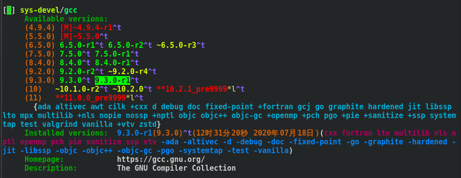
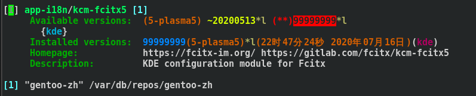
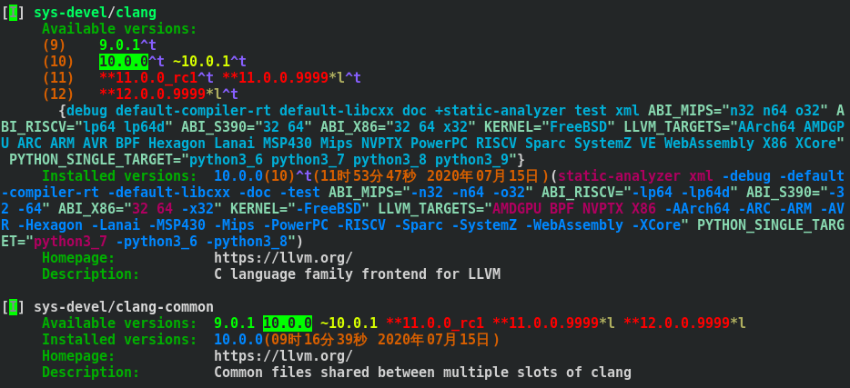

Gentoo 包管理
本文介绍 gentoo 包管理系统核心配置，以清晰明了、简单易懂为原则，不涉及深层内容。
掌握本文内容足以应对绝大部分软件安装、管理问题。
简介
Gentoo 的包管理系统是 Portage，详情可查看 emerge 的 man page 及以下链接。
Gentoo 软件仓库
Portage 对于软件的行为基于本地的 ebuild。 ebuild 相当于 arch 的 PKGBUILD，简单的说，ebuild 用于指导软件包及其依赖的构建。
- 如何获取 ebuild
绝大多数的 ebuild 或者说软件包都被包含在 gentoo 官方仓库中，只需同步软件仓库即可得到。
emerge --sync
# 或者
emerge-webrsync但部分软件并非由官方打包，其 ebuild 也不是官方维护。这些称为“野包”，可以通过添加其所属 overlay 后同步软件仓库获得。
- 如何查找 ebuild
假设你需要安装一个软件，但只知其一般名称，不清楚具体名称，且不清楚是否存在本地 ebuild。
首先通过emerge -S package_name模糊查询本地 ebuild。如果没有，访问https://packages.gentoo.org/查找所需软件。这里包含了所有官方维护的 ebuild 以及已注册的一些 overlay 中的 ebuild。如果还是没有，可以 google 或 github 搜索gentoo package_name。如果还是没有，可以尝试自己创建。
辅助工具
gentookit
gentookit 包含了一系列用于软件管理的工具，可以帮助用户管理软件包并跟踪其系统中正在发生的事情。对于新手而言，主要使用的是 euse（USE flag 管理工具）、revdep-rebuild（依赖修复工具）、eclean（源码及二进制包清理工具）。
eix
eix 主要用于替代emerge -S，提供更好的搜索体验。对于新手而言，熟悉eix package_name以及eix -I package_name足以。
软件选项
Gentoo 的包管理系统为软件定制设置了许多选项。其全局配置文件为/etc/portage/make.conf。
USE flag
简单的说，USE flag 就是指定软件功能的选项。比如你需要某软件的文档，那么就为该软件激活doc这个 USE flag。如果不需要文档，则将其关闭，设置为-doc。
- USE flag 设置分类
一种分类方法是全局和局部。
全局配置文件/etc/portage/make.conf（以下简称make.conf）中可以设置USE="clang nls"等全局 USE flag。
局部配置是为具体的包定制的，其配置位于/etc/portage/package.use。注意这可以是一个目录，也可以是一个文件。据个人经验，未防止自动更新配置文件时打乱注释，建议使用目录形式，为每个包单独设置一个配置文件。比如配置sys-devel/gcc的 USE flag，创建/etc/portage/package.use/gcc（文件名理论上可以任意取，但建议取用包名或部分包名）。在文件中添加sys-devel/gcc fortran nls nptl openmp pch sanitize ssp lto，其中sys-devel/gcc是包名，后面的都是 USE flag。当然你也可以分行写，每一行都是包名 + 一个 USE flag。
另一种分类方法是永久和临时。
永久的设置方式前面已经说明。同时 gentoo 还提供了一种临时使用 USE flag 的办法。这种临时方法也适用于很多其他选项。
比如安装 gcc，使用USE="nls pch" emerge sys-devel/gcc即可。
- 如何查看 USE flag
使用equery uses package_name查看包当前 USE flag 的状态。
Equery 是使用app-portage/gentoolkit包安装的工具集的一部分。详见gentoo wiki。
也可以使用eix package_name查看。
如果你不知道每个 USE flag 的具体含义，可查看https://www.gentoo.org/support/use-flags/。也可以点击https://packages.gentoo.org/中包页面中的 USE flag 查看详情。对于一些重要且流行的包，如 kde 的 plasma，可以在其相关的 wiki 中找到 USE flag 说明。
keywords
简单的说，keywords 用于告知软件在哪些架构下是稳定的、测试状态的或者未测试的。详见gentoo wiki。
以 amd64 为例，KEYWORDS=amd64表示接受所有已经在 amd64 架构下测试过的进入稳定分支的软件包。KEYWORDS=~amd64则表示接受所有在 amd64 架构下进入稳定分支和测试分支的软件包。
此外还有一些特殊形式的 KEYWORDS。但本质上是一样的。
如果软件的 ebuild 的 KEYWORDS 中不包含 amd64，则表明当前软件未在该架构下测试，或不可用。
- 如何配置 keywords
同样，在全局配置文件make.conf中可以配置KEYWORDS=amd64。
也可以在/etc/portage/package.accept_keywords中接受具体包的 keywords。同样这可以是一个目录，也可以是一个文件，建议设置为目录。在文件中写入app-i18n/fcitx5-chinese-addons之类的包全称即可。
这里还可以对包版本进行控制。如上例是接受该包所有版本的 keywords。若要接受指定版本，则=x11-libs/xcb-imdkit-99999999999 **。同样> < >= <=均是适用的。这也可以用于其他选项的配置。
- 如何查看 keywords
equery meta package_name或者eix package_name
建议使用eix package_name，结果如下


其中版本号前带~的为测试分支。特别注意带(**)的在配置文件中应当写入=app-i18n/kcm-fcitx5-99999999 **。直接写入app-i18n/kcm-fcitx5不会接受该版本。
- 是否选择开启测试分支
测试分支与稳定分支的差异无需多言。不过对于 gentoo 而言，有相当一部分“野包”并未进入稳定分支。因此软件的测试分支并不一定不稳定。
首先明确，新手绝不要在全局开启测试分支。一来，软件不稳定，bug 较多，新手无能力修复。二来更新频繁，电脑性能不足将严重影响体验感。最后，想再改到稳定分支难上加难。
是否需要为内核开启测试分支取决于计算机配置。截至本文攥写时，gentoo 稳定分支最新内核版本为 5.4.48，可能已经无法满足部分新机型需要。此时可以选择开启测试分支。gentoo 测试分支内核源码更新频率基本维持在几天一更。如果觉得过于频繁，可以指定测试分支版本或者隔几个版本编译一次内核。
其他
另外一个重要的选项是 license，即许可证。虽然 gentoo wiki 并不建议在全局接受所有许可证，但个人建议，如果你对此并不了解，完全可以在make.conf中直接设置ACCEPT_LICENSE="*"。
对于新手而言，熟悉以上三个选项足以。
其他选项可以自行参考 gentoo wiki。
版本控制
多版本软件并存是 gentoo 的一大特色，但事实上绝大多数软件并不具备该特性。
- 如何查看是否可以多版本共存

上图是eix clang的部分结果，其中 clang 与 clang-common 均存在多个可选版本。其中版本号前有(number)的 clang 可以多版本共存，而 clang-common 不可。
- 如何控制软件版本
临时设置可以直接在安装命令中指定，如emerge "=sys-devel/clang-9.0.1"。
如果需要永久固定软件版本，可以通过以下两种方案。
方案一：如果该软件版本处于测试分支，则在接受其 keyword 时，指定具体版本。当然，这并不能屏蔽稳定分支版本。因此仅适用于无稳定分支的软件。
方案二：对于方案一不可行的软件，可以在/etc/portage/package.mask中设置将该版本之后的所有版本屏蔽。如>=sys-power/powertop-1.97。
Portage 常见报错
被阻挡的包
- 报错示例
!!! Error: the mail-mta/postfix package conflicts with another package.
!!! both can't be installed on the same system together.
!!! Please use 'emerge --pretend' to determine blockers.- 原因
首先由报错信息可知，该软件包被阻挡显然是因为包冲突。一般是因为依赖冲突，包括编译依赖冲突和运行依赖冲突。
- 解决方案
如果你不熟悉 ebuild，不应当首先考虑修改 ebuild。如果可以二者取其一，则只需拆卸一个。如果二者都需要，可以考虑修改安装软件的版本，这可能助于避开依赖冲突。实在没有办法的情况下可以到Gentoo’s bugtracking system提交 bug。
被屏蔽的包
- 报错示例
!!! all ebuilds that could satisfy "bootsplash" have been masked.!!! possible candidates are:
- gnome-base/gnome-2.8.0_pre1 (masked by: ~x86 keyword)
- lm-sensors/lm-sensors-2.8.7 (masked by: -sparc keyword)
- sys-libs/glibc-2.3.4.20040808 (masked by: -* keyword)
- dev-util/cvsd-1.0.2 (masked by: missing keyword)
- games-fps/unreal-tournament-451 (masked by: package.mask)
- sys-libs/glibc-2.3.2-r11 (masked by: profile)
- net-im/skype-2.1.0.81 (masked by: skype-eula license(s))- 原因
一般是由于 keyword（包未经测试，未进入稳定分支）、license（许可证未接受）、package.mask（软件包损坏或有严重问题）或 profile（软件不适合当前 profile）。
- 解决方案
首先明确处于最后两种情况的软件不应被安装。
前两种情况只需单独为包设置 keyword 或者 license 即可。
USE flag 的必要更改
- 报错示例
The following USE changes are necessary to proceed:
#required by app-text/happypackage-2.0, required by happypackage (argument)
>=app-text/feelings-1.0.0 test- 原因
USE flag 不满足当前软件包编译安装需要
- 解决方案
手动修改 USE flag 或者etc-update
其他
依赖缺失、循环依赖等依赖方面的错误对于新手而言是个难题，如果你并没有能力自己修复，那么等上游修复 bug 后重试是最好的选择。
下载失败错误的一般原因应当不用多说，但也不排除 ebuild 中下载地址错误的情况。